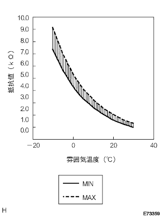

DTC FOOT エバポ後センサ回路 |
| 表示コード | 診断内容
| 点検部位 |
|---|---|---|
| FOOT |
|
|
| 手順1 | センタ クラスタ モジュール スイッチ単体点検（TE） |
IGスイッチをONにする。
SST(トヨタエレクトリカルテスター)を使用して、センタクラスタモジュールスイッチのコネクタA17(TE)端子←→A32(SG-TE)端子間の電圧を測定する。
|
| ||||
|
| ||||
| NG | |
| 手順2 | クーラ サーミスタ NO.1単体点検 |
 |
クーラサーミスタNo.1(エバポ後センサ)のコネクタを切り離す。
|  |
SST(トヨタエレクトリカルテスター)を使用して、クーラサーミスタNo.1(エバポ後センサ)のコネクタ2端子←→1端子間および4端子←→3端子間の抵抗値を測定する。
| 温度(°C) | 基準値(ｋΩ) |
|---|---|
| -10 | 7.40-9.20 |
| -5 | 5.65-7.00 |
| 0 | 4.35-5.40 |
| 5 | 3.40-4.20 |
| 10 | 2.68-3.30 |
| 15 | 2.10-2.60 |
| 20 | 1.66-2.10 |
| 25 | 1.32-1.66 |
| 30 | 1.05-1.35 |
|
| ||||
| OK | |
| 手順3 | ワイヤハーネスまたはコネクター点検（センタークラスタモジュールスイッチ-クーラサーミスタNo.1） |
センタクラスタモジュールスイッチのコネクタを切り離す。
SST(トヨタエレクトリカルテスター)を使用して、車両ワイヤハーネスの各コネクター端子間の導通およびGNDショート(短絡)を点検する。
| センタクラスタモジュールスイッチ側 端子番号(端子記号) | クーラサーミスタNo.1側 端子番号 |
|---|---|
| A17(TE) | 4 |
| A32(SG-TE) | 3 |
|
| ||||
| OK | ||
| ||